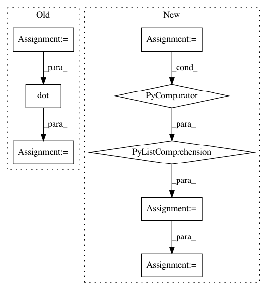

3dba9054b3c7bf4b9edabb430eb457a07e05b6ca,tensorly/mps_tensor.py,,mps_to_tensor,#Any#,8
Before Change
(r_prev, n_k, r_k) = factors[k].shape
G_k = tl.reshape(factors[k], (r_prev, n_k * r_k))
output_tensor = tl.dot(output_tensor, G_k)
output_tensor = tl.reshape(output_tensor, (-1, r_k))
output_tensor = tl.reshape(output_tensor, n_mode_dimensions)
After Change
output_tensor: ndarray
tensor whose MPS/TT decomposition was given by "factors"
full_shape = [f.shape[1] for f in factors]
full_tensor = tl.reshape(factors[0], (full_shape[0], -1))
for factor in factors[1:]:
rank_prev, _, rank_next = factor.shape
factor = tl.reshape(factor, (rank_prev, -1))
full_tensor = tl.dot(full_tensor, factor)
full_tensor = tl.reshape(full_tensor, (-1, rank_next))
return tl.reshape(full_tensor, full_shape)
In pattern: SUPERPATTERN
Frequency: 3
Non-data size: 8
Instances
Project Name: tensorly/tensorly
Commit Name: 3dba9054b3c7bf4b9edabb430eb457a07e05b6ca
Time: 2018-07-05
Author: jean.kossaifi@gmail.com
File Name: tensorly/mps_tensor.py
Class Name:
Method Name: mps_to_tensor
Project Name: Qiskit/qiskit-aqua
Commit Name: 790ff93e20cc36e15dfd039924e782cc559a67d7
Time: 2019-08-01
Author: chenrich@us.ibm.com
File Name: qiskit/aqua/operators/op_converter.py
Class Name:
Method Name: to_weighted_pauli_operator
Project Name: pymc-devs/pymc3
Commit Name: d1d2aa202803dada164cb378a4485fbba59f9e76
Time: 2018-07-01
Author: junpeng.lao@unifr.ch
File Name: pymc3/distributions/timeseries.py
Class Name: AR
Method Name: logp